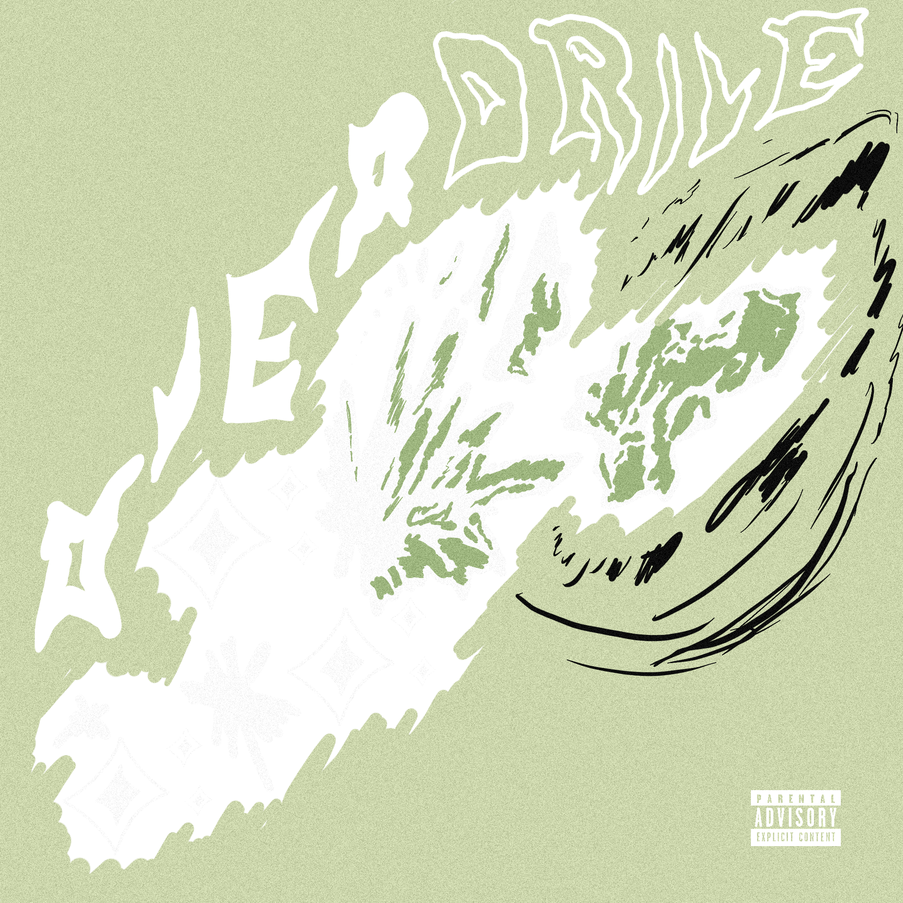
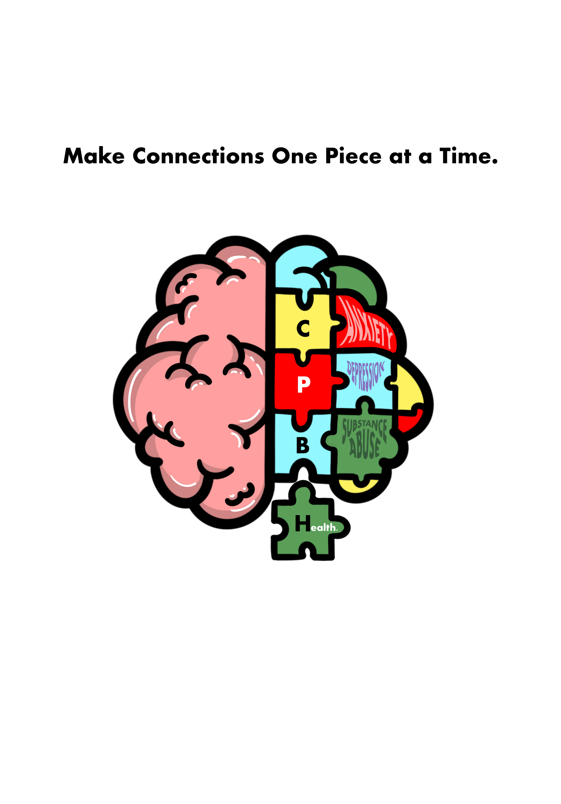
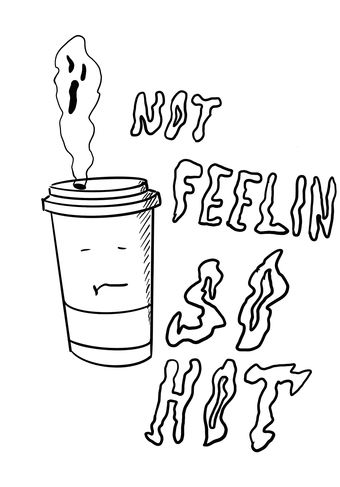
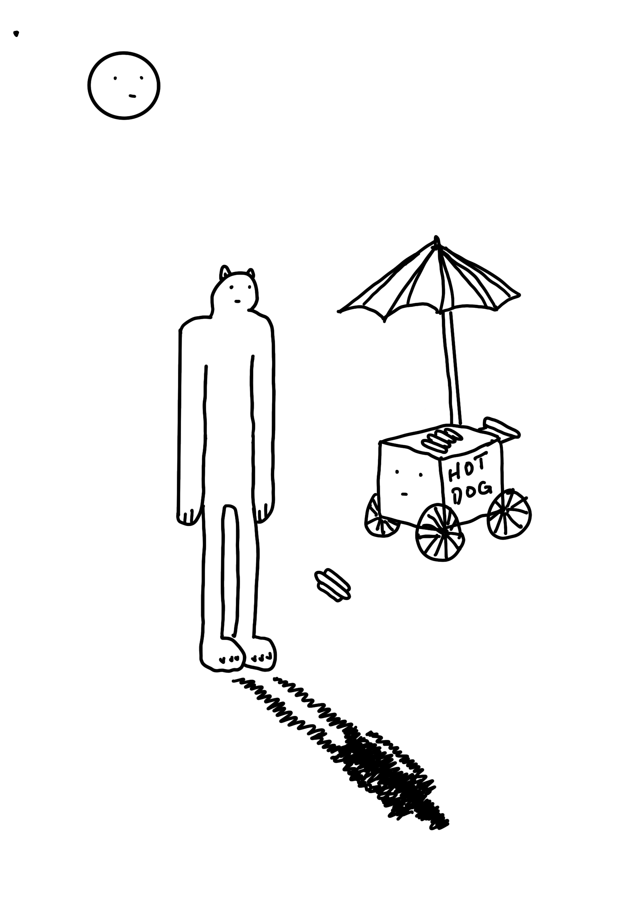

001
Kodak Co.
Illustration, character work, typography, and identity exploration.
Draw first. Explain later.
Notebook / Vol. 01
A notebook of drawings, experiments, websites, ideas, mistakes, and whatever I'm curious enough to make next.

still figuring it out
01
I'm Justin.
I like making things that live somewhere between useful, strange, and personal.
IT + Cybersecurity
Arizona State University

Look closer.

02
Some finished. Some experimental. Some made just because I needed to see what would happen.
001
Illustration, character work, typography, and identity exploration.
Draw first. Explain later.
002
Drawing is often where an idea starts before I know what the idea actually is.



003
Sometimes the process is less about drawing an object and more about finding movement, texture, and energy.

Not everything needs a category.
004
I learn best when I can take something apart, understand why it works, and rebuild it in my own way.

On the web
A few interactive projects, shown here as live previews. Open any one to explore the full website.
WEB / 001
An interactive look at sustainability through the history of Intel.
Open the websiteWEB / 002
A digital check-in experience for a sustainability summit.
Open the websiteWEB / 003
A space-themed interactive project built around exploring NASA content.
Open the websiteWEB / 005
An interactive project for building a beauty routine and exploring products.
Open the websiteWEB / 006
A small arcade game following a raindrop past pollution toward clean water.
Open the website
03
How I work
Design and technology don't feel like separate interests to me.
Both are ways of understanding systems, finding patterns, solving problems, and turning an idea into something real.
Loose pages



04
About
My name is Justin Webster. I'm an IT student at Arizona State University concentrating in Cybersecurity.
Outside of that, I spend my time exploring web development, graphic design, digital art, music production, and whatever else gives me an excuse to learn something new.
Making things grounds me.
It gives me a way to understand an idea instead of just thinking about it.
This website is part portfolio, part notebook, and part record of that process.

05
End of this page.
It doesn't have to be useful. It doesn't have to be perfect. It doesn't even have to make sense yet.
Start anyway.